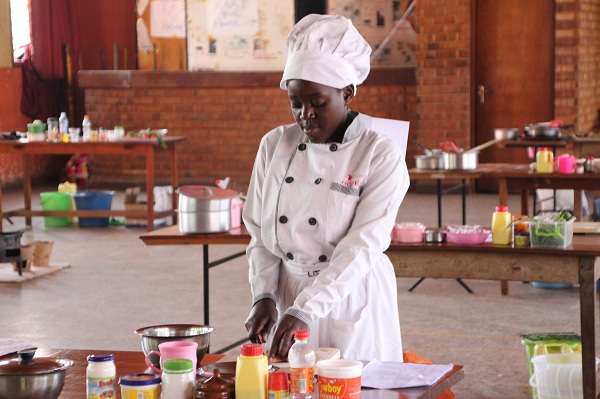
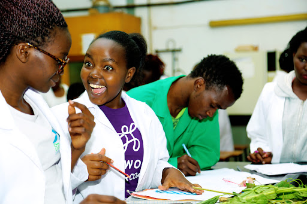

Department of Hotel, Catering and Institutional Management
Globally the Hospitality Industry, which encompasses tourism, catering, lodging, events management, transportation, among others, has seen immense growth. Ghana is not an exception and this has necessitated the need for qualified personnel to manage the sector efficiently and effectively.
Department of Computer Science
The Department of Computer Science has since in 2007 been training students in Higher National Diploma programme. The Department trains students in various fields of computing that equips them with knowledge for development and utilization of modern computing. Graduates are placed in work positions that are in high demand in the society.
Department of Food Technology
VISION
To be internationally recognized as a Centre for training people for the agro business and Hospitality and Tourism industries for effective job performance.

Department of Information Science
Information is a key resource for individual, organizational, national and international development. It must, therefore, be generated, processed, stored, and disseminated. The University decided to create this department in 2015 under the Faculty of Applied Science to train people to manage the various libraries and information centres in the country and beyond.
Department of Mathematical Sciences
The Department of Mathematical Sciences is one of the four departments under the Faculty of Applied Sciences and Technology. The department has always maintained an old philosophy that “If you can’t count or measure it, you can’t manage it” therefore our activities affect all policies, and touch all aspects of people’s lives.